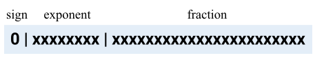
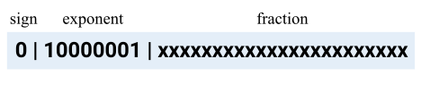
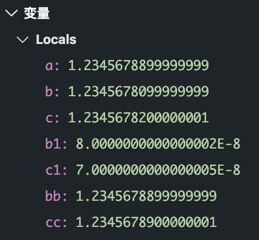

如果方向错了，再快也白搭。
首先我们明确一点，目前所用的计算机都是基于许多统一规范而来的。这些规范可能不够完美，但一定是目前为止最为适用且优秀的。我很喜欢一本书中列出的硬件设计三大基本原则：
- 简单源于规整
- 越小越快
- 优秀的设计需要适宜的折中方案
为什么要说这个？因为计算机的浮点数也是基于硬件设计的。很多时候你可能会感知不到它，只认为是普通的一个非整数而已。其实，因为硬件限制，计算机浮点数只是对于一个数的有限位近似。而如何近似？这就需要按照它所遵循的规范了。
本文中，主要探讨大部分基于二进制的计算机与其 IEEE 754 标准，以及由此带来的一些容易忽视的计算问题。因为也是看完书后的一些总结，所以只是浅显地说一下，但我会尽量保证内容的正确性和可读性。如果有错误，请指出。
浮点数
简介
先来说一下什么是浮点数，这里引用维基百科相应词条的首段进行说明。
在计算机科学中，浮点（英语：floating point，缩写为FP）是一种对于实数的近似值数值表现法，由一个有效数字（即尾数）加上幂数来表示，通常是乘以某个基数的整数次指数得到。以这种表示法表示的数值，称为浮点数（floating-point number）。利用浮点进行运算，称为浮点计算，这种运算通常伴随着因为无法精确表示而进行的近似或舍入。
-维基百科
规格化数
大家应该都很熟悉十进制中的科学计数法，比如 $0.031410^2$。那再进一步，一个采用科学计数法表示的数，如果没有前导 0，且小数点左边只有一位整数，则可称为规格化数。比如 $1.0_{10}10^2$ 是规格化的科学计数法数，但 $0.1{10}*10^2$、$10{10}*10^2$ 并不是。
在二进制数中，同样如此。只不过数字并非 0-9，而是 1 或 0。比如 $1.0101_{2}*2^2$ 就是一个规格化的二进制数。
浮点表示（IEEE 754）
以下会用十进制数 $5.25{10}=1.0101{2}*2^2$ 转换为标准单精度二进制浮点数作为例子。
目前计算机表示二进制浮点数的规范，是国际通用的 IEEE 754 标准。为了说明方便，这里只涉及单精度和双精度浮点数。
IEEE 754 标准规定，任意一个二进制浮点数可规范表示为如下格式：
- S (sign): 符号表示
- F (fraction): 尾数（有效数）
- E (exponent): 指数
它在硬件中如下表示（存储）：
你们也许发现了，这格式就如上述的规格化二进制数。其实，就是如此。在 $1.0101{2}*2^2$ 中，$S=0_2$, $F=1.0101_2$, $E=2{10}$。你们也许会好奇，为什么这里 E 用十进制标出？别急，我们一步步来。我们目前仅可确定 sign 的值。

可以看出，S 表示正负，F 的长短确定数的精度，E 的长短确定数的范围。
单精度与双精度
其主要区别在于，单精度用 32 位来表示一个二进制浮点数，而双精度为 64 位。并且，相应的尾数、指数位数会有不同。单精度中， sign 1 位， exponent 8 位， fraction 23 位；双精度中， sign 1 位， exponent 11 位， fraction 52 位。
说到位数，就不得不说 IEEE 754 对指数和尾数的特殊规定了。
指数与偏阶
其实很多你认为理所当然的东西充满着设计者的思考。
之所以将符号 sign 、指数 exponent 放最面，一个原因是，可以比较容易地处理整数比较。但 exponent 是一个无符号整数（unsigned int），那问题来了，负数如何表示才能让其更好地满足这一点？
如果指数 exponent 用补码表示，那 -1 将会是 11111111 ，而 1 只是 00000001 。在相同符号下，这样子并不能将一个大数和一个小数快速区分。因此希望将最小负数的指数表示为最小，最大整数的表示为最大。就这样，IEEE 754 规定其指数部分采用带偏阶的计数法，即移码。
简单来说，指数 exponent 的值须减去一个中间数（偏阶），才可得到真实值。对于单精度（取值范围为 0-255），这个中间数为 127；对于双精度（取值范围为 0-2047）则为 1023。
也就是说，如要将 $1.0101{2}*2^2$ 中的指数 $2{10}$ 表示为合理的二进制指数形式，应将其加上偏阶后再转换为二进制。即 $2{10}+127{10}=129_{10}$，所以为 10000001 。

至此，我们可以将之前的公式再次细化为：
尾数与有效数
IEEE 754 标准为最大化表示数，将规格化二进制数中的前导 1 隐藏了。因此，单精度下，尾数的实际范围为 24 位，双精度为 53 位。为了说明准确，将隐藏前导 1 的尾数称为有效数（但本文中依然称之为尾数）。
为什么这样可行呢？因为用规格化二进制表示的 F，其只会在 1≤F<2 之间。因此，必定存在前导 1，也就可以默认隐藏。
比如 $1.0101_{2}*2^{10000001}$ 中的 F=1.0101 ，在此规定下，只需将 0101 记录在 fraction 中即可。至此转换完毕，依次对应填入即可。

因此，最终公式可拓展成：
特殊
那可能会有疑问了，如果是 0 的话，那岂不是也会被默认加上 1 导致无法表示？这大可不用担心，因为 IEEE 754 还有个特点，即用特殊表示特殊。简单可总结为：
E 不全为 0 或不全为 1：这时，浮点数就遵守上述规则
E 全为 0（最小）：这时，若 F’ 也为 0，则表示 0；若 F ‘不为 0，则表示非规格化数
E 全为 1（最大）：这时，若 F’ 也为 0，则表示无穷；若 F’ 不为 0，则表示 NaN（非数）
总结
至此，IEEE 754 规范下的二进制浮点数表示的基本规则已经全部阐述了。
我们来总的看一下最初的例子。
首先，十进制转换成相应的规格化的二进制数。
$5.25{10}=1.0101{2}*2^2$
然后，将其指数转换为相应的移码。
$1.0101{2}2^2=1.0101_22^{(129-127){10}}=1.0101_2*2^{10000001}$
再者，因为 IEEE 754 默认忽略前导 1，因此可去除 1。
$1.0101_22^{10000001}=.0101_22^{10000001}$
即 $(-1)^0(1+0.0101_2)2^{10000001}$
最后，表示为标准的二进制浮点数。
即
0 10000001 01010000000000000000000
易忽视的计算问题
接下来，我们结合上面所描述的，来说说知道这些后，除了对具体设计的理解外，对我们日常有何应用。
主要是由于浮点数的非精确存储，其在计算过程中可能会引起微小的容易被忽视的问题。
下面的几个问题都是围绕计算所展开的，所以会有些相似，但还是都大致例举一下相应场景。
算数精确性
与整数不同，大部分浮点数无法表示一个具体的数，只能无限近似。为了保证其精确性，IEEE 754 还规定了如下内容：
- 保护位：在浮点数的中间计算中，在右边多保留的两位中的首位，用于提高舍入精度
- 舍入位：在浮点数的中间计算中，在右边多保留的两位中的第二位， 使浮点中间结果满足浮点格式，得到最接近的数
- 粘贴位：在保护位和舍入位之后，当舍入位右边的数非 0 时置 1，否则为 0
好处应该很容易看出，在数的比较、运算中都能提升其精度。
因为是近似，IEEE 754 也提供了几种舍入模式供程序员选择近似策略。
- 总是向上舍入（+∞）
- $1.50{10}$ -> $2{10}$
- $-1.50{10}$ -> $-1{10}$
- $2.50{10}$ -> $3{10}$
- 总是向下舍入（-∞）
- $1.50{10}$ -> $1{10}$
- $-1.50{10}$ -> $-2{10}$
- $2.50{10}$ -> $2{10}$
- 截断舍入
- $1.50{10}$ -> $1{10}$
- $-1.50{10}$ -> $-1{10}$
- $2.50{10}$ -> $2{10}$
- 向最靠近的偶数舍入
- $1.50{10}$ -> $2{10}$
- $-1.50{10}$ -> $-2{10}$
- $2.50{10}$ -> $2{10}$
这个过程一般是编译器自动帮你选择。当然，你也可以在处理过程中自行完成。
因此，在不同舍入模式下的运算结果可能有差别。不过也值得注意的是，即便是相同的舍入模式，在不同存储方式中，结果可能也可能不同。
可以看一下下面这个例子。
1 |
|
1 | 8.000000 |
有时需要注意。
比较问题
可以看一下这段程序：
1 |
|
输出：
1 | true1 |
由此可见，第三个 if 判断为假。这也是因为其存储精度，在计算上引起的问题。

所以在比较经计算后的浮点数时，对于精度要求不高的时候，可以进行相应转换。或不要求完全相同，检测其误差是否在一定范围之内。
加法结合律
有上面的例子后，再来看看浮点数的加法/减法。
我们可以来看下面这个例子：
1 |
|
输出为：
1 | (3.14e7 + -3.14e7) + 1.0 = 1.000000 |
由此可以看出，浮点数加法不同的结合方式最终会有不同的结果。根本原因也很清楚，因为大部分浮点数只是一个数的近似表示，只有有限位的它，会根据舍入模式来选择性进位或舍去一些数。
但我们可以进一步抽象，问题可以归结为：浮点数计算中改变计算的顺序可能会得到不同的计算结果，即结果不可重复。
下面这个 Python 的例子，很好的说明了这一点。
1 | import random |
输出：
1 | 5.023873624910684e+23 |
虽然在很多时候这种区别微乎其微甚至可以忽略，但在一些需要高精度或复杂计算的时候，多次运算会不断放大这种差别，最后每次都会得到不同的结果。
不过，乘法和除法是相对安全的。
并行计算
随着需求以及技术的发展，现代计算机有很多并行的场景。
现代处理器为了能同时提取并处理多个数据，通常会在一个宽字内部进行的并行操作，即子字并行。例如，在 128 位内对进位链进行分割，使处理器可同时处理 16 个 8 位、8 个 16 位等运算的同时进行并行操作。还比如操作系统层对运行程序的抽象—进程，以及其线程，都是并行的一种表现。
这必然后导致一个问题，也就是上述提到的问题，浮点数计算的顺序会导致结果的不可重复。
可以看一下下面这个例子。Python 多线程间的执行顺序不同，结果也不同，原因还是与上述相同。
1 | import threading |
输出：
1 | 5.0523641431462865e+23 |
最后
其实关于易忽视的计算问题中，大部分都是因为存储精度引起的问题。如果对于精度要求不高，不负责任地说，选择忽视其实问题也不大…
关于这点，还有一个专门的领域来研究算法的数值稳定性，叫数值分析。